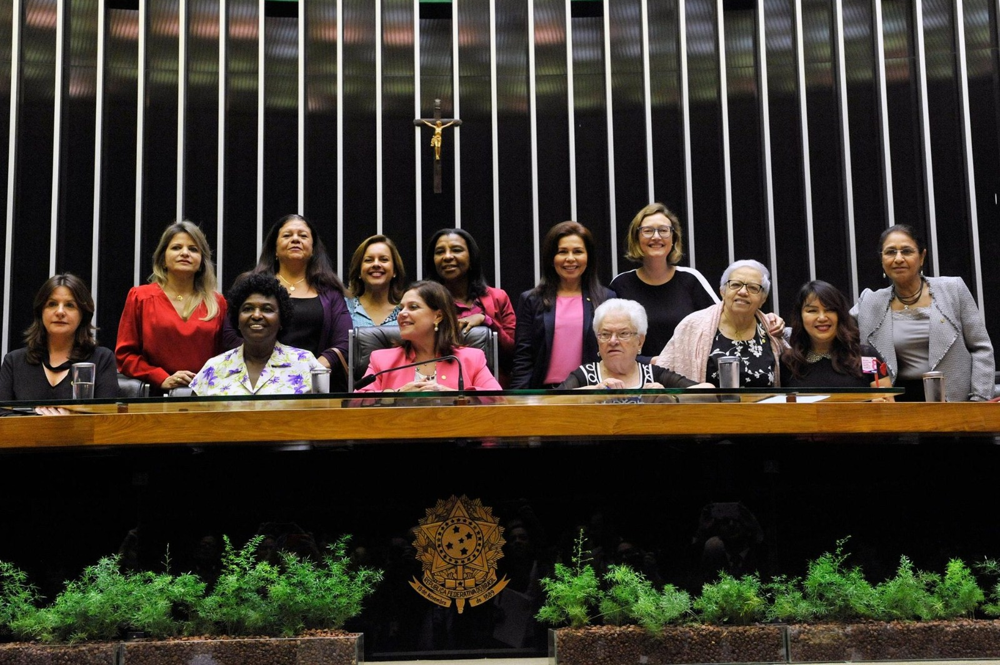

Desafios à sub-representação feminina na política
Podres poderes na política
ㅤㅤNo livro “Torto Arado”, o escritor Itamar Vieira aborda a luta de mulheres brasileiras por direitos, a
resistência e o protagonismo nas dinâmicas coletivas no campo. Análogo à ficção, no cenário político, a luta
feminina expõe o machismo estrutural pela imposição do mando a todo custo. Esta hegemonia delimita
números desiguais de candidaturas a estes gêneros, delega às mulheres subcategorias em cargos políticos
e as exclui de se inserirem nesse espaço, ao negociar candidaturas “laranjas” de mulheres nas esferas
partidárias municipais.
ㅤㅤEssa sub-representatividade feminina, no parlamento brasileiro, advém da disputa desigual de cargos.
Em pleno século XXI, a Lei no 12.034/2009, estabelece 30% de mulheres nas candidaturas políticas. Como
agravante, o país ocupa a 142a posição no quesito participação feminina na política, com apenas 15% de
cadeiras na Câmara dos Deputados e menos de 13% no Senado Federal. Esta realidade se fortalece por
não haver manifestações de grupos femininos com partidos políticos próprios contra tal realidade. Neste
contexto, vê-se a linguagem própria de “mandos, posses” e de autoridades com seus “caciques” por cada
estado de federação.
ㅤㅤNesse cenário de entraves, a recusa frequente em conceder cargos de presidência a mulheres reitera
o machismo enraizado e inserido em todos os setores públicos. E a ínfima participação feminina na política
fortalece a resistência masculina à eleição de mulheres para cargos mais altos. De acordo Marília Ferreira,
muitos desses preconceitos fundamentam-se emestereótipos que reforçam a natureza feminina como não
preparada para os exercícios de cargos públicos, em especial cargos de decisão. Essa divisão hierárquica
reforça estereótipos de gênero, e subestima a capacidade feminina de alcançar cargos de liderança e de
influência.
ㅤㅤPor conseguinte, as mulheres enfrentam comumente candidaturas de fachada, destinadas apenas a
cumprir a cota de gênero, o que mina os esforços para alcançar a igualdade de gênero na esfera política e
compromete a integridade do sistema democrático. Segundo Jorge Mussi, sem as candidaturas laranjas, os
partidos não conseguiriam cumprir as exigências necessárias para participar do pleito, portanto, todo o
conjunto de candidatos acabou sendo beneficiado. Tamanhos episódios desviam o foco da
representatividade feminina e perpetua a desigualdade de gênero na política brasileira.
ㅤㅤ Diante as disparidades de gênero radicadas no âmbito político, evidencia-se a necessidade de reverter
tal cenário. Logo, cabe ao Governo Federal junto aos órgãos responsáveis, reestruturar a Lei 9.100/95, afim
de promover maior fiscalização das cotas de gênero e fomentar ações afirmativas que fortaleça a
representatividade política feminina. Dessa maneira, será possível extinguir a distopia evidenciada pelo livro
“Torto Arado”.
Autores da redação: Juliana Pereira Santos e Pedro Henrique Cotrim de Castro
